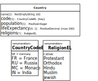

In the following practice projects, first make a list of all the constraints that have been expressed in the information model. Then code the app by following the guidance of this chapter and Chapter 9.
If you have any questions about how to carry out the following projects, you can ask them on our discussion forum.
The purpose of the app to be built is managing information about
movies. The app deals with just one object type, Movie, and
with two enumerations, as depicted in the following class
diagram.

You can use the sample data shown in Table 11.1 for testing your app.
The purpose of the app to be built is managing information about
countries. The app deals with just one object type,
Country, and with two enumerations, as depicted in the
following class diagram.
|  |
Compared to the practice project of our validation tutorial, two
attributes have been added: the single-valued enumeration attribute
code, which is a "key" attribute (implying a uniqueness
constraint), and the multi-valued enumeration attribute
religions.
You can use the sample data shown in Table 11.2 for testing your app.